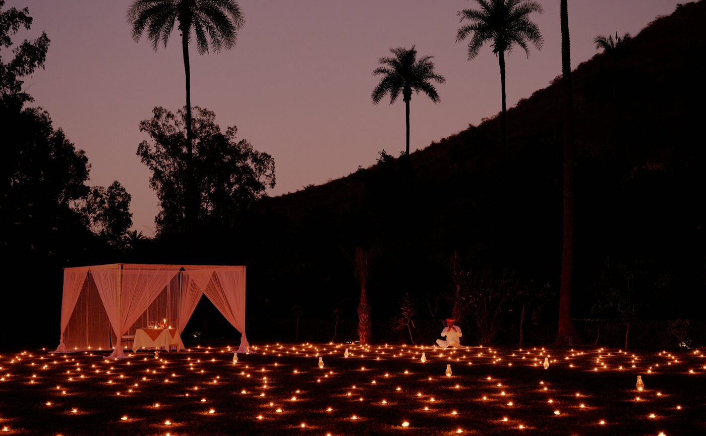

Bhangarh was built in 1613 and empty within a generation. The Archaeological Survey of India bars anyone from its lanes between sunset and sunrise, so Amanbagh takes its guests in the other direction, laying breakfast on a stone chhatri as the gates open.
The sign at the entrance is the first thing you read. Entry before sunrise and after sunset is prohibited, on the authority of the Archaeological Survey of India, and the guards enforce it. Bhangarh is the fort town Madho Singh, younger brother of Raja Man Singh of Amber, raised in the early seventeenth century, and its people left it within a generation. Nobody agrees on why. The palace still climbs the hillside in tiers, the Gopinath and Someshwar temples still stand along the main street, and the bazaar keeps both rows of its shopfronts, roofless, with ficus trees growing through the walls.
Amanbagh's version of the visit starts in the dark. The jeep leaves the resort in Ajabgarh and reaches the gate as the guards open it, and by the time the sun clears the Aravalli ridge the yoga mats are out on a terrace above the ruins. Breakfast follows on an open-sided chhatri, a table laid with white linen, fruit and parathas and pots of masala chai, the abandoned city below and nobody else in it. The same pavilion takes lunch later in the day for guests who would rather sleep in.
Tuttle's garden
The resort is twenty minutes back down the valley. Ed Tuttle designed it in 2005 as a walled Mughal garden, pavilions of pink marble and local sandstone set on axis around a central pool, cupolas above and water channels between. The land was the Maharaja of Alwar's hunting ground, the staging post for tiger shoots in the Sariska hills, and the walls now hold fruit trees, palms and a vegetable garden that supplies the kitchen. Morning mist sits in the palms until the sun gets over the ridge.
There are forty keys. The Pool Pavilions each run to 203 square metres, with a walled garden courtyard, a private swimming pool and a domed bathroom with a marble soaking tub. The Haveli Suites take the upper and lower floors of the two-storey wings: the Terrace Havelis at 163 square metres look over the pool or the hills, and the Garden and Courtyard Havelis at 125 square metres have a private terrace or a ground-floor courtyard for dinner outside. Every stay includes breakfast, afternoon tea, a group yoga session and a guided walk each morning, and a tour of the organic garden.

Dinner on the lawns, the hills going mauve behind the palms · Courtesy of Aman
Diyas in the grass
The kitchen works from recipes handed down through local families and from the garden outside the door. A masala dosa at breakfast, samosas with sundowners, a Rajasthani thali at dinner. The restaurant, high-arched and terracotta-toned, opens to non-residents. The private tables are the point of the place. Somsagar Lake, built in 1598 for Emperor Akbar's visit to Ajabgarh, is reached on foot through a gorge; the resort lays breakfast on its shore beside blocks of marble polished smooth by four centuries of cattle coming down to drink, and the walk can carry on up to the Meena village of Kala Para.
Dinner has more options than nights. The Polo Lawn is set with a sea of candles and a chef and waiter assigned to your table alone. A stone chhatri in the fields is lit with hundreds of diya lamps and a musician plays through the courses. Jhilmil Bada, a mud-plastered platform hidden in the elephant grass at the far end of the estate, recreates the jungle dinners the maharajas ate after a hunt in the nineteenth century, fire bowls and all. The rooftop chhatri on the main pavilion does breakfast above the treetops, and the Gwaadi, an open courtyard with earth walls, hosts the cooking class, spices and masalas first, then the meal you made.
The town emptied four hundred years ago and the guards still lock it at dusk. Breakfast is the hour you are allowed.
The Splendid EditCow dust
The late afternoon excursion has a name, the Cow Dust tour, for the hour when goats and buffalo are driven home and the dust they raise turns the sunset gold. It goes by jeep, by bicycle, by camel or on a Marwari horse, the breed with the inward-curling ears, and ends with chai in a village house. Sariska Tiger Reserve, once the same maharaja's shooting ground, is forty-five minutes away and its season runs from 1 October. Jaipur is two hours by car, and the resort's guide knows where the silk carpets, the gemstone paintings and the tailors are.
The calendar from here runs through Diwali on 8 November, which the resort marks with its own festivities, into a festive season of a Christmas Eve gala dinner in the gardens, a game of camel polo and a blessing ceremony on New Year's morning. The Ultimate Discovery offer, valid to 20 December 2027, wraps three nights at full board with a room upgrade on arrival and a choice of the Bhangarh half-day or a Champi head massage, with the sunrise walks and yoga already in. From Delhi the choice is car, train or the resort's own heliport. Whatever the route, aim to arrive before the light goes; the fort keeps its own hours, and so does the valley.
Accommodation, inclusions, dining, experiences, festive programme and offer terms from aman.com (Amanbagh pages updated January to August 2026). Bhangarh history and the Archaeological Survey of India entry rule from published accounts of the site. Sariska season dates from the Rajasthan forest department booking portal.
Photography courtesy of Aman — © Aman, Amanbagh